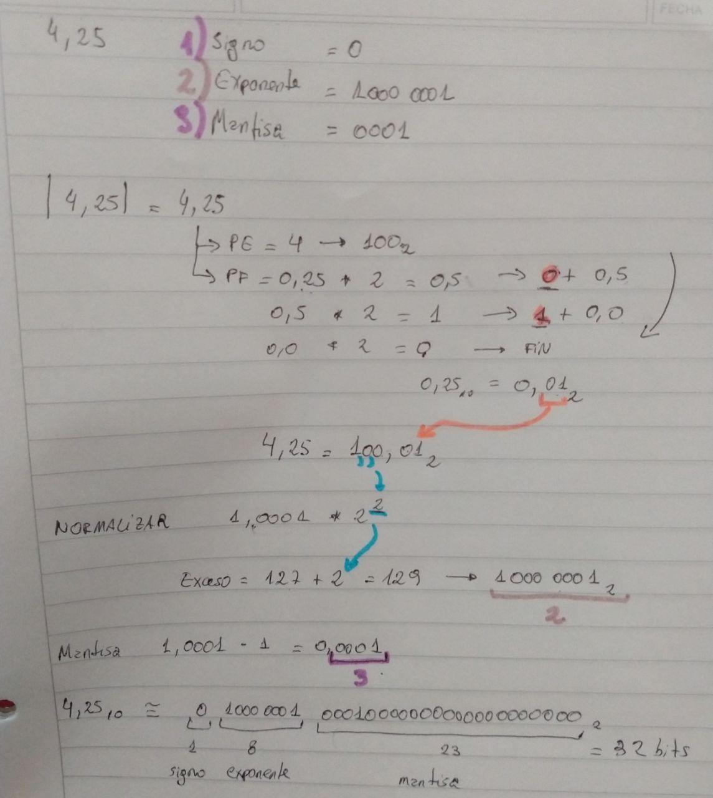

Autora: Docente Candelaria Alvarez
Estimados alumnos y alumnas
Hemos realizado un video resolviendo un ejemplo del tema "Representación de datos numéricos"
El ejercicio del video es el siguiente:
En el TP02 los ejercicios equivalentes son los de la sección 3: Representación de Números Reales, en particular el ejercicio 4.
En el apunte de la materia pueden leer al respecto en la sección 3.10, que comprende las páginas 42 a 47.
Enlace al video: https://youtu.be/D20f-077A
Resolución completa del ejercicio:
